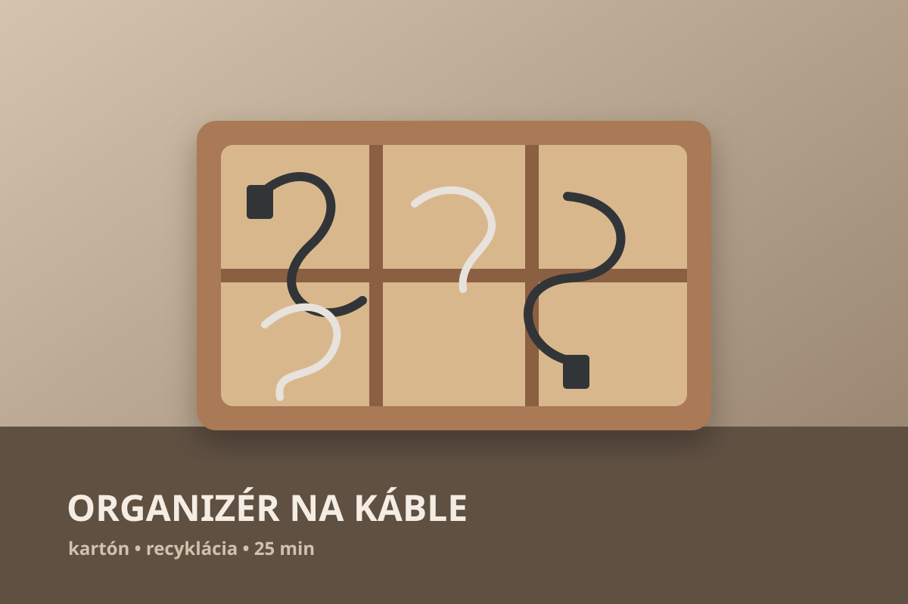
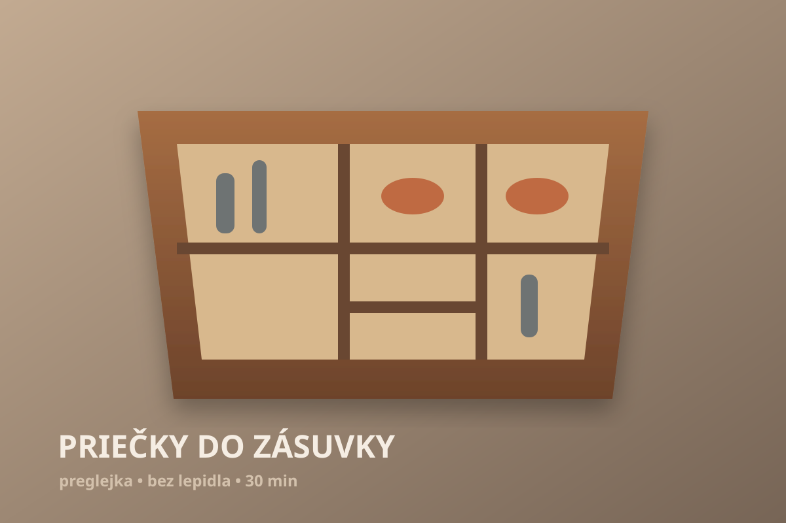

01 · DOMÁCNOSŤ
Mini odkladacia stanica pri dverách
Drevo, oceľové háčiky a konečne jedno miesto na veci, ktoré stále hľadáš.
35 minĽahké€
↗
PRAKTICKÉ NÁPADY PRE BEŽNÝ DOMOV
Projekty, ktoré majú zmysel aj mimo internetu. Reálny materiál, normálne náradie, jasný obrázkový postup a výsledok, ktorý doma alebo v dielni naozaj využiješ.
6 PRVÝCH PROJEKTOV
Drevo, oceľové háčiky a konečne jedno miesto na veci, ktoré stále hľadáš.
Každá zrnitosť na svojom mieste. Malý projekt s veľkým efektom na poriadok.

Teplé drevo, terakota a tri úrovne zelene aj tam, kde nie je veľa miesta.

Pevný kartón namiesto ďalšieho plastu. Jednoduché priehradky a pokoj v zásuvke.

Bez lepidla, bez vŕtania. Rozloženie, ktoré si neskôr pokojne celé zmeníš.

Drevený blok, oceľové vrtáky a každý priemer presne tam, kde ho čakáš.
Skús iné slovo alebo inú kategóriu.
JEDEN FORMÁT PRE KAŽDÝ PROJEKT
Veľký vizuál hneď ukáže, či je to projekt pre teba.
Žiadne prekvapenie v polovici výroby. Všetko je vypísané vopred.
Každý krok má vlastnú grafiku a krátky popis.
Praktický detail, ktorý ušetrí čas, materiál alebo nervy.